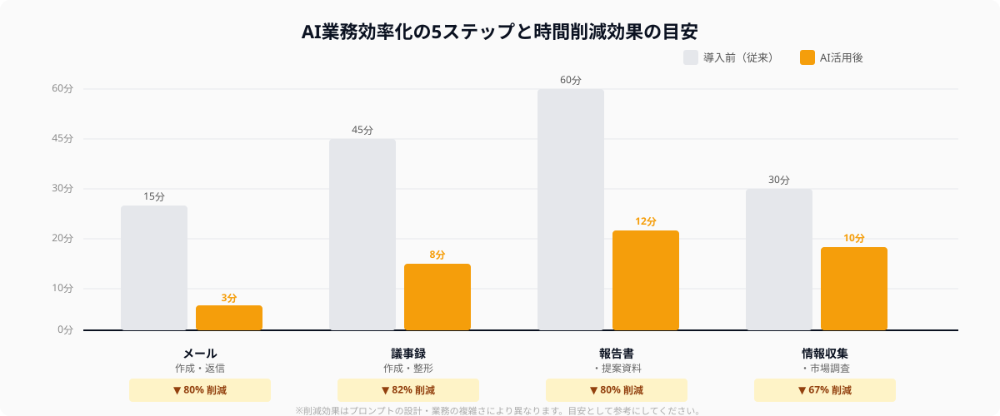
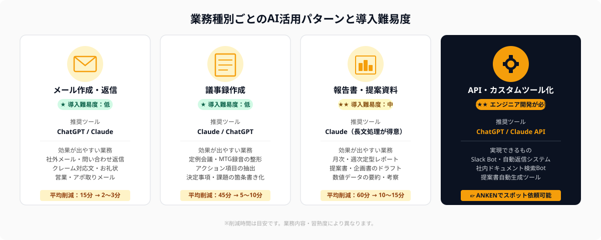

AIで業務を効率化したいが、何から手をつければいいか迷っていませんか
「ChatGPTが話題なのはわかるが、どの業務に使えばいいかわからない」「とりあえず試してみたけど、うまく活用できていない」——AIの普及とともに、このような声が多く聞かれるようになっています。
AIはポテンシャルが高い分、使い方を間違えると「ただの検索ツール」で終わってしまいます。反対に、正しい手順で導入すればメール作成が5分→1分、議事録が30分→5分といった劇的な効率化が実現します。
この記事では、AI業務効率化を確実に成果につなげるための5つのステップと、具体的な業務ごとの実践手順をまとめました。AI初心者の方でも今日から取り組めるよう、プロンプト例も交えて解説します。
AI業務効率化の5ステップ全体像
AI導入で失敗する多くのケースは「ツールを入れたが定着しなかった」です。定着させるためには、正しい順序で進めることが重要です。

Step 1：効率化したい業務を特定する
最初のステップは「何を効率化するか」を明確にすることです。AIは万能ではないため、繰り返し発生し、かつパターン化できる業務を対象にするのが成功の鍵です。
効率化に向いている業務の特徴は以下のとおりです。
- 毎日・毎週繰り返し発生する（例：週次レポート、日報、メール返信）
- インプット情報が決まっている（例：会議の録音、数値データ、顧客情報）
- アウトプットの形式がある程度定まっている（例：報告書テンプレート、メール文体）
まずは自分の1週間の業務を棚卸しし、「毎回30分以上かかっている繰り返し業務」を3つ書き出すところから始めましょう。
Step 2：用途に合ったAIツールを選ぶ
業務の種類に応じて最適なAIツールは変わります。2026年現在の主要ツールの使い分けは以下のとおりです。
- 文書作成・長文処理・報告書 → Claude（長文コンテキストに強い）
- 情報収集・最新情報が必要な業務 → Gemini（Google検索連携が強み）
- コード作成・データ分析・幅広い業務 → ChatGPT（汎用性が高い）
- 無料で試したい・最初の1本 → Gemini（無料プランが最も充実）
どれか1つに絞る必要はありません。「文書はClaude、調査はGemini」のように使い分けることで、それぞれの強みを最大活用できます。
Step 3：プロンプトテンプレートを作る
AIを効率化ツールとして使い続けるためには、毎回ゼロから指示を書かない仕組みが必要です。そのために「プロンプトテンプレート」を作成します。
優れたプロンプトテンプレートには以下の要素が含まれます。
- 役割指定：「あなたはビジネスメールのプロです」
- 状況説明：「以下の内容を元に〇〇を作成してください」
- インプット欄：「【入力情報】〇〇」（ここを毎回書き換えるだけ）
- 出力形式の指定：「箇条書きで3点・300字以内で出力してください」
一度テンプレートを作れば、次回からはインプット欄を書き換えるだけで、毎回同じ品質のアウトプットを得られます。テンプレートはNotionやGoogleドキュメントなどで管理すると共有も楽です。
Step 4：小さく試して改善する
AIの出力は最初から完璧ではありません。重要なのは「試す → 評価する → プロンプトを改善する」のサイクルを回すことです。
最初は自分1人の業務で試し、「使える」と感じたら少しずつ業務範囲を広げていきます。プロンプトの改善は、出力を見て「何が足りないか」「何が余計か」を具体的にAIにフィードバックすることで精度が上がります。
💡 プロンプト改善のコツ
「もっと簡潔に」「5行以内で」「敬語を使って」など、出力の問題点を具体的に指示しましょう。曖昧なフィードバック（「なんか違う」）よりも、具体的な修正指示のほうがAIは正確に対応できます。
Step 5：チームに展開・定着させる
個人で効果が確認できたら、チームへの展開を検討します。展開時のポイントは以下のとおりです。
- 成功事例を共有する：「〇〇の業務に使ったら◯分削減できた」という具体的な数字を伝える
- プロンプトテンプレートを共有する：NotionやSlackのチャンネルに置いて誰でも使えるようにする
- ルールを決める：「個人情報・機密情報はAIに入力しない」などの社内ガイドラインを設ける
- 定期的に見直す：月1回など定期的にプロンプトの精度と業務効果を評価する
業務別の具体的な効率化手順

メール作成・返信を効率化する
メール作成は、AIで最も手軽に効率化できる業務の一つです。以下のプロンプトテンプレートを活用してください。
📝 メール作成プロンプトテンプレート
あなたはビジネスメール作成のプロです。以下の情報をもとに、丁寧でわかりやすいビジネスメールを作成してください。
【宛先】〇〇様（〇〇会社）
【目的】〇〇（例：打ち合わせの日程調整、見積もりの依頼 など）
【伝えたいこと】〇〇
【トーン】丁寧・簡潔（or 親しみやすく・フレンドリー）
【文字数】300字以内
件名も含めて出力してください。
このテンプレートを使えば、【宛先】【目的】【伝えたいこと】を書き換えるだけで、毎回高品質なメールを数秒で生成できます。
議事録作成を効率化する
会議の議事録作成は、AIによる効率化で特に大きな時間削減が見込める業務です。推奨フローは以下のとおりです。
- 会議を録音する：Zoomのレコーディング機能やiPhoneのボイスメモを使用
- 文字起こしツールを使う：Notta・Otter.ai・Googleドキュメントの音声入力などで文字起こし（5〜10分）
- AIで要約・整形する：文字起こしテキストをClaudeまたはChatGPTに貼り付け、以下のプロンプトで要約
📝 議事録要約プロンプトテンプレート
以下の会議の文字起こしを整理して、議事録を作成してください。
【フォーマット】
■ 会議概要（日時・参加者・目的）
■ 決定事項（箇条書き）
■ 課題・懸念点（箇条書き）
■ 次のアクション（担当者・期限付き）
【文字起こし本文】
〇〇（ここに文字起こしテキストを貼り付け）
このフローを使えば、従来30〜60分かかっていた議事録作成が5〜10分に短縮できます。
報告書・提案資料を効率化する
月次レポートや提案書のような定型的な報告書は、AIとテンプレートの組み合わせで大幅に効率化できます。手順は以下のとおりです。
- 報告書の「型（アウトライン）」をあらかじめAIに作らせる
- 実績数値や具体的な出来事だけを自分でインプット
- 「このインプット情報を使って〇〇の書式で報告書を作成して」とAIに指示する
- 出力を確認・修正して完成
特にClaudeは長文の読み込み・生成が得意なため、複数ページにわたる報告書や提案書の作成に適しています。PDFや過去の報告書をそのまま読み込ませて「この形式で今月分を書いて」という指示も可能です。
よくある失敗パターンと対処法
AI業務効率化を試みた企業・個人の多くが直面する失敗パターンと、その対処法をまとめます。
-
失敗1：「思ったより精度が低い」
→ プロンプトが曖昧なことが原因。役割・状況・出力形式を具体的に指定すると精度が大幅に上がります。 -
失敗2：「使い続けられない」
→ 毎回ゼロから書いていることが原因。プロンプトテンプレートを作り、コピペで使える状態にすることが定着の鍵です。 -
失敗3：「機密情報を入力してしまった」
→ 社内ガイドラインを事前に作成することが重要。個人情報・顧客情報・機密情報はAIに入力しないルールを徹底しましょう。 -
失敗4：「チームに広がらない」
→ 成功体験の共有不足が原因。具体的な時間削減効果を数字で見せることが、チームへの展開を加速します。
さらに上を目指す：AIをシステム化・ツール化する
AIを「チャットで指示する」段階から進め、社内専用ツールやAPI連携ツールとして実装すると、さらに劇的な効率化が可能になります。
たとえば以下のようなカスタムツールが、週末のスポット開発で実現できます。
- Slackに届いたメッセージを自動で要約・分類するBot
- 社内ドキュメントを検索して回答するRAGシステム
- フォームに入力するだけで提案書や見積書が自動生成されるWebツール
- 会議録音を自動でアップロードすると議事録がSlackに届く自動化フロー
このようなカスタム開発には、ChatGPT・Claude・Gemini APIを扱えるエンジニアが必要です。しかし正社員採用するほどの工数ではなく、週末2〜3日のスポット依頼で完成するケースがほとんどです。
🔧 AI社内ツールのスポット開発を検討している方へ
ANKENでは、ChatGPT・Claude・Gemini APIを活用した社内ツール開発を得意とするエンジニアと、週末スポットでマッチングできます。要件が固まっていない段階からでも相談可能です。
まとめ：AI効率化は「小さく始めて広げる」が鉄則
AI業務効率化の5ステップをまとめます。
- 業務を特定する：繰り返し・パターン化できる業務を3つ書き出す
- ツールを選ぶ：用途に応じてClaude・ChatGPT・Geminiを使い分ける
- プロンプトテンプレートを作る：役割・状況・出力形式を明記したテンプレートを用意する
- 小さく試して改善する：1業務で試し、フィードバックでプロンプトを磨く
- チームに展開する：成功事例と時間削減効果を数字で共有する
最初から完璧なシステムを目指す必要はありません。まず1業務で5分の削減を実現し、それを積み重ねる——この地道なアプローチが、AIを本当に業務に定着させる唯一の方法です。
さらに高度なAI活用（API連携・カスタムツール化）をご検討中の方は、ぜひANKENのスポット発注をご活用ください。要件整理から一緒に進められるエンジニアとマッチングします。
議事録自動化・社内ドキュメントBot・提案書生成ツールなど、ChatGPT・Claude API活用の社内ツール開発をスポットで依頼できます。固定費ゼロ・週末対応可能。初回相談は無料です。
👉 無料でスポット依頼を相談する要件が固まっていなくてもOK。相談から始められます。